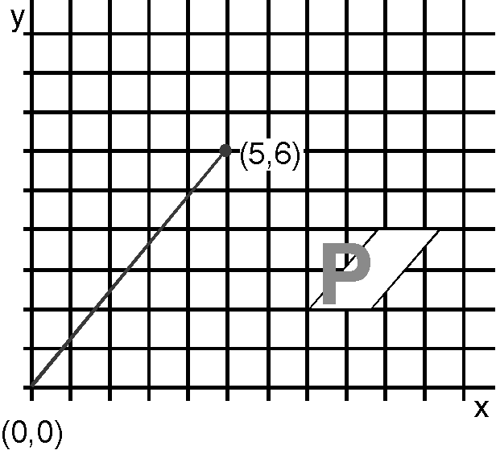
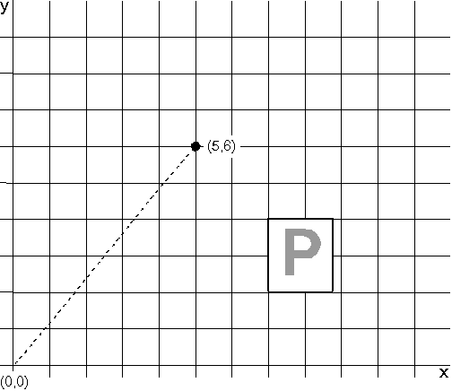
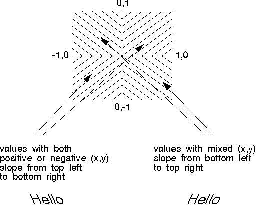

Character shear is the angle defined by the x-axis and a vector drawn through the origin to a specified point in a Cartesian coordinate system. Neither (0,0) nor the specified point need have any relation to the current position. The operating system then aligns the vertical sides of the character cell. If the font is an outline font, the operating system also aligns the vertical strokes of the characters with the vector, regardless of the current character mode, as shown in the following figure.
An application can retrieve the point that defines the character shear vector using GpiQueryCharShear. An application can set the character shear using GpiSetCharShear, which accepts as input the x- and y-coordinates of a point that defines the new vector in a POINTL structure.
The shear of a character is the angle formed by the vertical lines of the character cell, and it can affect both the positioning and shape of characters in the character string. By default, the vertical lines of a character cell are parallel to the y-axis of the presentation page. As input to GpiSetCharShear supply the coordinates of the end point of a vector drawn from the origin (0,0). The effects of the current character shear value vary, depending on the current character mode and font type.
Effect of Character Shear on an Outline Font
The character cell is drawn with its vertical lines parallel to the vector from the origin to (5,6). The character is sheared to the same degree.
The character-shear value is ignored if the current font is an image font and the current character mode is CM_MODE1, as shown in the following figure. 
Effect of Character Shear on an Image Font in CM_MODE1
The character string is unaffected by the character-shear value.
The character-shear value affects the positioning of the characters from an image font in CM_MODE2 only if character direction is CHDIRN_TOPBOTTOM or CHDIRN_BOTTOMTOP. That is, characters drawn vertically do not appear in a vertical line for nonzero shear angle from the vertical. The characters themselves cannot be sheared, as shown in the following figure.
Effect of Character Shear on an Image Font in CM_MODE2
The character cell is sheared, and it controls the positioning of the characters; the characters themselves are unchanged.
If the x- and y-coordinate values you specify in GpiSetCharShear are both positive and negative, the characters slant from lower left to upper right. If you supply one negative and one positive value, the characters slant from upper left to lower right, as illustrated in the following figure. 
Effect of X- and Y-Values on Character Shear
Character shear, like other attributes, has a default value that can be changed using GpiSetDefAttrs (CBB_SHEAR). To reset the character shear to its default effect of drawing the vertical lines of the character cell parallel to the y-axis, supply a coordinate value of (0,1) on GpiSetCharShear.